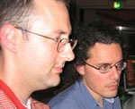
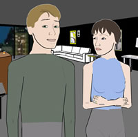
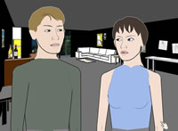

|
Behind Façade:
An Interview with Andrew Stern and Michael Mateas
by Brenda Bakker Harger
alternate format- interview .pdf Andrew Stern is a designer, researcher, writer and engineer of personality-rich, AI-based interactive characters and stories. Previous to co-developing the interactive drama Façade, Andrew was a lead designer and software engineer of the award-winning Virtual Babyz, Dogz, and Catz from PF.Magic, which sold over 2 million units worldwide. Andrew's work has been presented and exhibited at venues such as the Game Developers Conference, SIGGRAPH, ISEA, DAC, DiGRA and AAAI symposia, and has been written about in the New York Times, Newsweek, Wired and AI Magazine. Andrew blogs at grandtextauto.org.
Michael Mateas is an assistant professor at Georgia Tech in the School of Literature, Communication, and Culture and in the College of Computing. His work in expressive AI involves developing new forms of art and entertainment while also advancing AI research goals. His projects include Office Plant #1, Terminal Time, and, with Andrew, the interactive drama Façade.
Brenda Harger: Why did you choose to work with the genre "drama" as opposed to comedy, etc.
Andrew Stern: Not only did we choose drama, we focused on an intimate, kitchen-sink drama about just three characters, inspired by Albee's Who's Afraid of Virginia Woolf? The primary reason for this choice is that it's the kind of experience we so much want to have in an interactive form. We felt little had been built in form or content like Façade, either in commercial games or from the interactive art community, and we very much wanted to see what such an interactive drama would look and feel like! It's a drama, but like Albee's play, we included many comic moments between Grace, Trip and the player, amidst their tragic circumstances. In fact because Grace and Trip try so hard to play the drama straight, it allows players have fun acting as cut-ups.
Another reason we chose drama, as I think many writers would agree, is that drama is easier on the whole to achieve than comedy. We faced enough design and technical hurdles with this project that we needed all the help we could get...
Michael Mateas: Most games these days focus on huge physical spaces; the player's primary experience involves wandering and exploration. As they wander and explore, the player has a series of shallow interactions with a large number of objects and non-player characters--dodging, jumping, running, shooting, etc. Thus, most games tend to be broad and shallow, a giant space full of many, many repetitions of the same shallow interaction. With Façade, we wanted to think about deep interaction, and intimate drama is a good vehicle for forcing this. Grace and Trip's apartment is small, contains only a few objects, and has only two characters to interact with. So all of the design, and all of the player's interaction, has to drill deeper, has to be about the structure and longer-term ramifications of the player's social interactions with Grace and Trip.
We also wanted to make an experience that could be played to some endpoint (there are a number of possible endings, of course) in a short amount of time, say the length of a half-hour TV show with the commercials removed. This is an antidote or contrarian response to the 50+ hours of gameplay common in contemporary games. What about games that, like plays, movies, or TV shows, give you a powerful, meaningful experience in a much shorter amount of time? In some sense, Façade is the world's most complex casual game.
BH: How do you describe interactive drama? What needs to happen to make something fit into that descriptor?
MM: To be interactive drama, an experience should have rich, emotive, socially-present characters to interact with, and a strong sense of story progression that is organically and dynamically shaped by the player's interaction. Additionally, the player's primary interactions should be with the characters. If, for example, you placed believable characters in an adventure game, so that, in addition to puzzle solving and exploring, you also had these moments of rich social interaction, you wouldn't have interactive drama, because the experience wouldn't be fundamentally driven by the character interaction. This is not to say that it wouldn't be an interesting and pleasurable experience. I enjoy adventure and RPG games, and would love to see more believable characters in such games. For example, if the princess in Ico, a game I enjoyed very much, had been an autonomous, believable character, the experience would have been even more powerful. But it still wouldn't be interactive drama, because there would be a lack of a strong story arc (progression) and because much of the interaction would still be the standard crate sliding/jumping/climbing mechanic of adventure games.
BH: How did you find each other?
AS: We first met at the 1997 Socially Intelligent Agents symposium at MIT, organized by the American Association of Artificial Intelligence (AAAI). I was presenting commercial work building personality-rich, emotional and social virtual Dogz and Catz, and Michael was a new member of the pioneering Oz Project at Carnegie Mellon, presenting subjective avatars, his first research project as a PhD student. At our next meeting, the 1998 Lifelike Characters Conference, we decided to work together on some sort of AI-intensive interactive drama piece, that would serve as a personal art/e-lit project for us both, as joint AI research (some piece of which contributing to Michael's dissertation), and as a commercial product prototype. By January 2000 we were both working on Façade full time-Michael in grad student mode, and me going self-funded after quitting my industry job.
BH: The genre of interactive drama is relatively new. What attracted you to it?
MM: Well, in junior high and high school, I was very into playing video games. I got an Atari 2600 in junior high and, while I owned a bunch of games, was particularly taken with the Adventure and Superman carts. I spent a lot of time in the arcade as well (I was the king of Space Zap, very good at Gorf and Timepilot, mediocre at Donkey Kong, and always sucked at Defender). Like many people fitting my geeky profile, I also was a paper and pencil role-player, all first-generation TSR Hobbies games ( Dungeons and Dragons, Gamma World, Boot Hill, etc.). As I loved creating and managing worlds, I was always the dungeon master. I liked to set up these independent processes in the world, and, for example, have the local hill giants destroy the players' village while they were out on some other completely unrelated adventure; when they got home and found their smoking village, they'd have a mystery to solve. To keep these other parts of the world going, I'd constantly role dice to look things up in these probability tables I'd constructed; this freaked out the players, because they thought I was about to spring some trap on them. My very first computer program was a text adventure written in Basic for my friend's TRS-80 Model One (hard because the Model One's "Level 1 Basic" only gave you two string variables, A$ and B$); I continued the game hacking when I got my own Atari 800. With all of this, I spent a lot of time thinking about putting characters in worlds, simulating worlds, having story structures in worlds, etc.
Jumping ahead to the early 1990s, I was working in human-computer interaction research groups, first at Tektronix Labs and then at Intel Labs. In 1992-93, I was working at Tektronix labs on building a MOO, using the LambdaMOO core, as a corporate training environment. I was using finite-state machines to build characters for the MOO, quickly came to the conclusion that finite-state machines for character authoring sucks, and started looking around for other approaches. That's when I came across the Oz Project work and thought, "this is good stuff." Later, when I decided to go back to school for a Ph.D., I applied to CMU to work with the Oz Project. Joe Bates ended up leaving CMU to form a startup about the time I arrived. But even though I ended up being the last Oz Project person, it worked out great for me in that I had an incredible amount of autonomy, and got to build on the systems and techniques of the group that had thought the most deeply about interactive drama.
AS: I've always been actively creating stories and games using electronic media. In high school and college I programmed a slew of humorous little games and animations on my Commodore 64 and Amiga, and made dozens of short films and videos. As an undergrad I double-majored in computer engineering and filmmaking--if only today's curricula in game design had existed back then! After finishing a Masters in Computer Science (my applications to NYU and USC graduate film schools were rejected, a good thing in hindsight I think), in order to combine my interests in computers and story I thought I'd have to work at ILM or the like. I liked videogames well enough, but wasn't much interested in making them--this being 1992 mind you, games were cruder and less cinematic than they are today. I got lucky and stumbled upon PF.Magic, a new startup in San Francisco co-founded by Atari-2600 cartridge programmer Rob Fulop, who had the vision and wherewithal to push towards character-centric interactive entertainment. I joined them at 22 and stayed with them for eight years, eventually becoming a designer and behavior engineer for the AI-based virtual pet characters Dogz and Catz, which ended up selling over two million copies worldwide. During this time I co-wrote and co-directed a feature-film (shot on video) that got some play at some festivals, but I quickly realized that interactive characters and stories were really an untapped, exciting and fertile direction for innovation in narrative and drama. I haven't made a film since. After finishing up as lead designer and programmer for Babyz I left in 2000 to start Façade.
BH: How did you come up with this as your story? What inspired the characters?
AS: To keep things minimal, from both an aesthetic as well technical perspective, we wanted to find a scenario that would have the least number of characters while still delving deeply into issues about people's inner lives. It's amazing the scarcity of satisfying interactive experiences that are actually about people's lives--subject matter that is, of course, the heart of the best literature, cinema, theater and television. Marriage, or a romantic relationship in general, is perhaps the quintessential topic of drama about people, and so we began heavily brainstorming in that direction. We knew we wanted two computer characters to interact with the player, not just one, because two can conspire to keep the drama progressing even if the player isn't saying or doing much or is acting crazy. We soon realized that the structure of Who's Afraid of Virginia Woolf fit these criteria nicely and would make a good model for the interaction. Like George and Martha, we gave Grace and Trip a wealth of problems and hidden motivations leading to the present moment, carefully balanced between them; in the big picture, we wanted them to share equal blame for their plight. The player discovers these secrets as she plays, but because there is only time per play to uncover and address a portion of their problems, any one play may appear to implicate just one of them. That's good; we want multiple re-plays to be required to understand the whole story. Along the way players learns that they were the one responsible for originally introducing Grace and Trip to each other, ten years ago--a piece of backstory that hopefully engages the player a bit more, and supplies a catalyst for their blowup at this moment, answering the question "why tonight?"
BH: Is this autobiographical?
AS: Uh oh, our wives were afraid you'd ask that question.
BH: Come on, share the dirt.
MM: To help us understand some of the head games and dynamics of a marriage in trouble, we talked with my friend Kathy, who's a marriage and family counselor. That was helpful for thinking about how to structure the interaction within beats.
AS: Actually Grace's buried secret that she slept with someone else the night before Trip's marriage proposal--a proposal given on Christmas Eve in front of their parents, making it almost impossible for Grace to say no--is based on a true story. Not mine or Michael's, thankfully. We also got a lot of entertaining dysfunctional stuff from Eric Berne's book Games People Play.
BH: Who is your audience?
MM: We're really addressing the non-gamer, the adult movie-and-theater-going public who is interested, as Andrew said earlier, in stories about people's lives. One challenge is that non-gamers aren't used to interacting in game worlds, aren't used to the conventions of gaming. When we've put Façade in front of people who've never played a game before, they're unfamiliar with the idea of using the arrow keys to move around, of typing to talk, of using the cursor to manipulate objects; so they tend to have slow, awkward experiences. Hopefully those conventions are easy to learn, but I think it is a barrier for non-gamers. On the other hand, hard core gamers, though they're intimately familiar with gaming conventions, are confused by Façade because it doesn't fit prior genres. I remember when Façade was an IGF finalist at GDC 2004, one guy walked up, watched someone play for about ten seconds, and said "What the hell is this?" It was just so outside his expectations about what you do in a game, that he didn't even know how to think about the experience. I really liked the comment; it showed that we've been successful at pushing game-like interaction into new territory. If the experience felt familiar and comfortable to gamers, we wouldn't have been pushing hard enough. Our real audience right now is probably the frustrated gamer, someone who's familiar with the conventions of gaming, but is tired of the current game genres, who is hungry for deeper interaction with characters and for real story progression. But we of course want to grow our audience beyond the frustrated gamer--we want to create a new interactive drama audience.
BH: Do you save and compare versions of the story from users? Is there one in particular that you like?
AS: A transcript in the form of a stageplay script is automatically created each time Façade is played, including the player's own dialog, allowing players to read the particular story that just got generated. Many players have posted their generated scripts online or e-mailed them to us. As of this writing, Façade has been out for about 9 weeks and downloaded over 150,000 times, resulting in a bunch of emails and comments and anecdotes on blogs and discussion groups. It's particularly rewarding to read stageplays that show evidence of players engaged in the drama in the ways we hoped it would--where in improvisational theater terms, players successfully took Grace and Trip's improv offers, and Grace and Trip were able to take and work with the player's offers as well. Even more entertaining however have been the stageplays where players manage to keep the drama progressing while acting out-of-bounds or really wacky. For example, in one script, a player pretends he's been shot and is dying in front of Grace and Trip's eyes; Grace and Trip, highly motivated to perform a drama about their marriage, do their best to acknowledge the player's discomfort but end up quibbling about trivialities such as Grace's decorating. Another stageplay has the player pretending to be a zombie, able only to utter the phrase "Brains..." Trip invites him in, tries to fix him a drink and tell him about their failed second honeymoon to Italy. They're pretty hilarious.
BH: How do you see this evolving in the future?
MM: I'd love to see other people start producing interactive dramas. One of the things that has held this field back has been the dearth of finished, fully produced, interactive drama experiences. As a field, we need to move beyond theories without implementations and technical prototypes without developed characters and stories. In order to really explore the space of possibilities of interactive drama, more people need to build playable experiences, experimenting with different approaches to autonomous characters and drama management, trying different approaches for structuring the story, different interfaces for player interaction, and so forth. I believe (hope) that we'll see a number of interactive dramas come out in the next few years. As well as experimental productions, we'd both love to see interactive drama become a viable commercial genre.
AS: Likewise, I'd love to see us producing more interactive dramas! I believe we can take what works best from Façade, some of which is not only interesting but also fun, and expand in that direction. Over the past few years we've learned a lot about what works and what doesn't work about the design and engineering of interactive stories, and developed a deeper understanding of what it will require to create even more generative story systems in the future.
One thing the experience of building Façade taught us is how difficult it is to design, write and engineer stories that are non-trivially interactive, that truly give players some agency over the experience. While we believe we have developed a software architecture and authoring idioms for achieving this to some extent, with much room for improvement of course, it's very clear that the authoring process needs to become more efficient and more feasible for artists who are not hardcore-programmers to engage in. We're very interested to build even higher-level authoring tools, as a layer or layers above our existing languages and programming idioms, to allow artists with "light" programming skills, or perhaps even non-programmers, to be able to author Façade-like experiences. This seems critical for the evolution of interactive drama, as Michael alluded to, and important for the goals of our own newly-formed production studio, Procedural Arts.
MM: Eventually, once the production process is better understood, we'll see long form experiences, where one playthrough takes more like two hours rather than the twenty minutes of Façade, or where the characters evolve over a series of shorter, episodic stories. Long form interactive drama has the potential for players to really develop strong and complex relationships with the characters. To do a love story involving the player, for example, would be hard in a short experience like Façade. There just isn't enough time for the player to develop a complex history with the characters. The autonomous character problem gets even harder in a long experience; to do something like a love story, the character AI has to understand the implications of the evolving, complex history they are developing with the player. Though there's still plenty of hard technology and design work to be done, interactive drama has the potential to become an incredibly powerful medium.
Additionally, interactive drama has strong potential in the serious games space, for building education and training experiences, particularly for practicing people skills such as doctor/patient relationships, the people side of business management, conflict resolution, negotiation, and so forth. There have been training simulations built in all these areas, but they don't yet have the emotional intensity, fluidity of local interaction, and organic, global story structure of Façade.
BH: What would you have done differently?
AS: Although the project was a huge amount of work for us, and a frequent cause of frustration over the various features we had to cut for lack of time, in the end we're pretty happy with the piece. In hindsight of course we see several aspects of the drama that could use improvement or tightening up, but within the time budget we had, I don't think there are things we would have done terribly differently. We and hopefully others can learn from the failures and successes of the experiments we tried.
Perhaps the biggest tradeoff we could have made would have been to sacrifice more moment-by-moment richness, what we call local agency, to give the player even more control over the overall plot variability, what we call global agency. If Façadeis lacking anything, it could use more global agency, even though it has more than most interactive stories we've seen.
MM: With the second half of Façade, what we call the therapy game, we went out on a limb. In this part of the experience, the player is supposed to influence the characters by giving them advice and offering them explanations about their situation. We didn't succeed in communicating this dynamic as effectively as we should, or in making the natural language understanding system handle the more complex language of advice and explanations as well as it could. I'm glad we tried the therapy game, but in retrospect, given the level of tuning we achieved, I wish it was a smaller part of the experience.
I was really hoping to see more global agency, much more generativity at the story level. But it turned out that achieving good local agency with conversation turned out to be hard enough that we didn't have as much time to push on the story level. While games excel at providing local agency, no games achieve conversational coherency, nor have an AI providing moment-by-moment control of character details such as emotionally evocative facial expression and body posture; this turned out to be a hard problem on its own. Nevertheless, by pushing hard on the local level, we now have a much better idea of what you need to do to provide more generativity at the story level, and we still managed to provide some global agency.
BH: What's next?
MM: I'd like to experiment with different design decisions, such as having the player play a character with a background, versus the little-to-no player character background we chose for Façade. In general, there were a bunch of design decisions we made in Façade that really sample on one point in the space of possible interactive dramas; I'd like to open up some other possibilities in the interactive drama design space.
We both want to push on more extreme story-level generativity. At first this will mean starting with a scenario even simpler than that in Façade. The trick will be finding story scenarios that are still effective as interactive experiences, yet have a simple enough logic behind them that you can generate much of the story structure from more fundamental pieces, thus providing more global agency.
In general, I'd like to figure out how to make long-term game research happen. What I mean by game research in this context is research that simultaneously pushes on fundamental game technology and new design directions. Façade is really an example of a successful academia/industry collaboration (Andrew coming out of his years of experience making the Petz and Babyz products, me coming out of the Oz Project), but for it to happen we both had to make a lot of personal sacrifices. There currently aren't any sustainable models for making a Façade 2--something that pushes as far beyond Façade as Façade did beyond prior interactive drama work. Industry folk don't expect to do longer term research (with few exceptions, such as Will Wright's team at Maxis), and academic folks don't expect to make fully-produced, releasable experimental games. This has to change.
AS: On the commercial side, as we mentioned earlier we've formed a studio called Procedural Arts, and are currently developing several project concepts that build upon our work with Façade. Some of the concepts are relatively conservative and probably more easily fundable, essentially adding more advanced interactive character and story techniques to existing game genres. Some ideas are more experimental, working to innovate new genres and reach new markets, which may require us to get creative to find sources of funding.
We feel a strong need for innovation in interactive art/entertainment, and believe it very well may only come from small independent studios willing to take design and technology risks, not from large conservative game companies. Players are starving for something fresh and new, not to mention the masses of people who currently find today's games too violent, juvenile or difficult. The attention Façade has received highlights the need for a robust independent game development scene that builds fully produced, radically experimental games, blazing the trail towards new game genres. If games are truly to become the cinema of the 21st century, expressing and commenting on the full range of human experience, an independent game scene that builds experimental, artistic games such as Façade is a necessary complement to the commercial game world.
Photo by Jason Della Rocca, images from Façade.
|